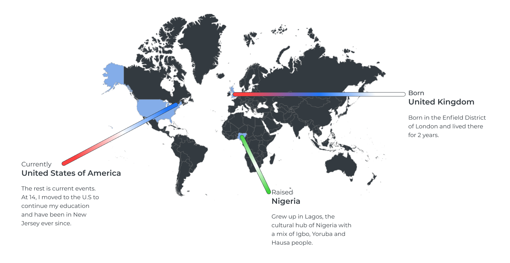

Hello
I'm a user experience designer looking to advance my career in the
design world.
I've always had a soft spot for art and design. It's where my talent blooms.
I can create and reform anything I can see.
I started out at Rutgers University as a Mechanical Engineer but towards my junior year user
experience piqued my interest and I switched to Computer Science.
Through years of study and practice, I've built the drive to build
engaging
design experiences for everyday people.
I've also developed a peeve for badly designed tech...

I was born in the Enfield district of London, United Kingdo where I lived for 2 years before moving
back to my home country where I was raised.
I spent 12 years in Lagos, Nigeria with my family. Ocassionally visiting our village in Umunachi,
Anambra State and London every year
and in February 2010, moved to Clifton, New Jersey at age 14 and have been here since.
Reading
I like a good read. fiction and non-fiction alike. In my learning experience,
I've found great read like The design of everyday things and my oersonal favorite: Thinkertoys
Nothing beats Attack on Titan though.

Music
Terrible sense of smell, great sense of hearing so a good tune goes a long way with me. Hip-hop, Rock, Alternative and the occasional orchestral score. If I'm not listening I'm making scores. Take a listen.
Gamer
From skirmishing on Summoners Rift to Triple S rank combos on The Bloody Palace to the dreaded 1 v 1
in the Gulag. If i have a free hand, its typing "GG"
Wanna duo? Add me.
Steam: Ragnosock
Riot:Inquisitor XIV
Discord: Noruto#1124
Foodie
Hungry? Rice. Tired? Rice. Market crashes? Rice. Earthquake? Rice. Alien invasion? Rice. Turns out
the Mayans were right and the world is actually ending in a ball of flames...?
You know how this goes.
Cooking
I'm an aficionado in rice and rice accesories.